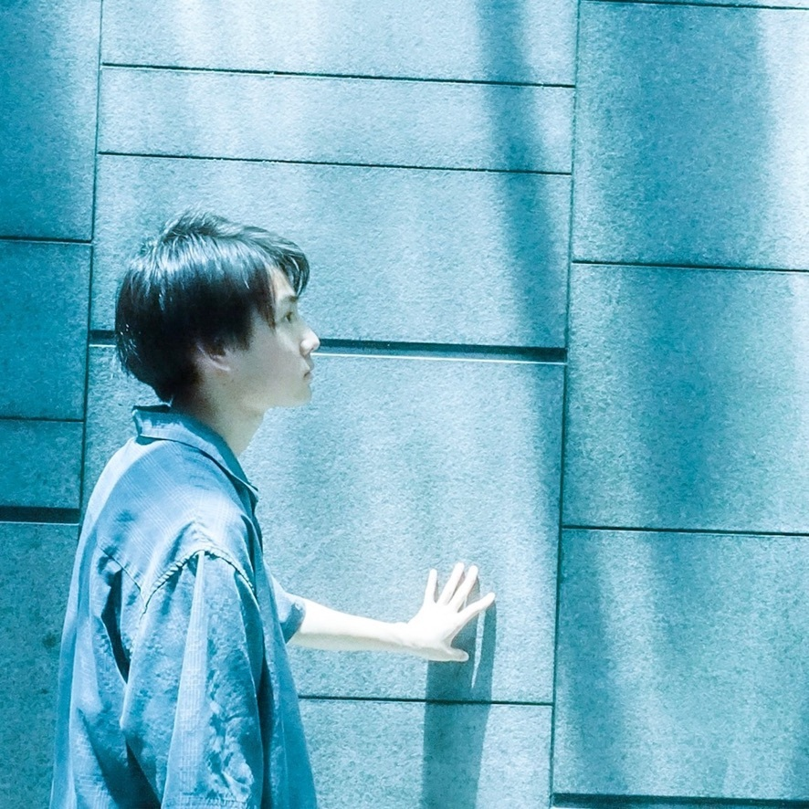
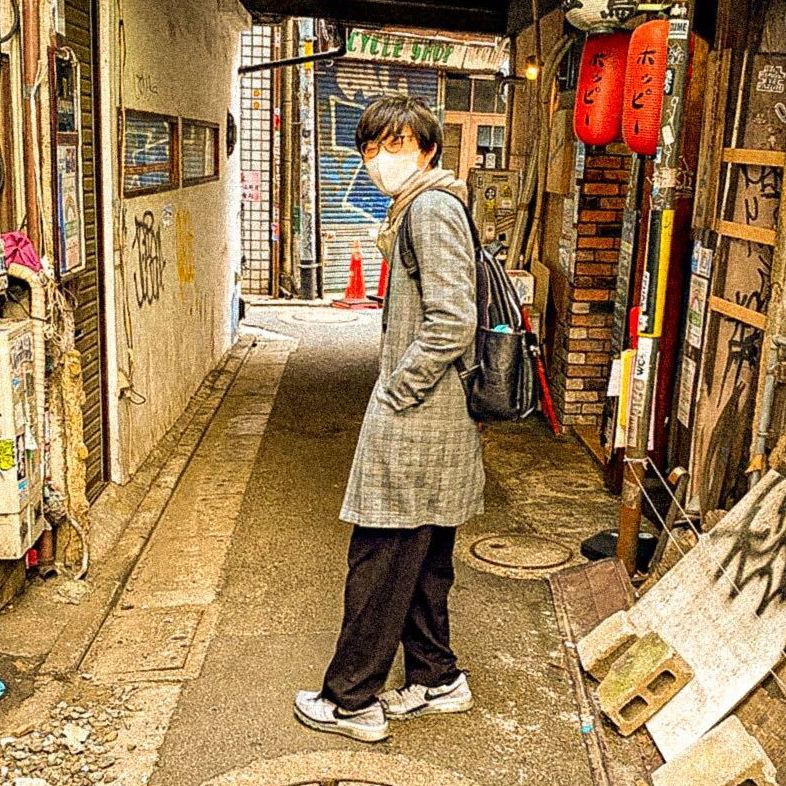
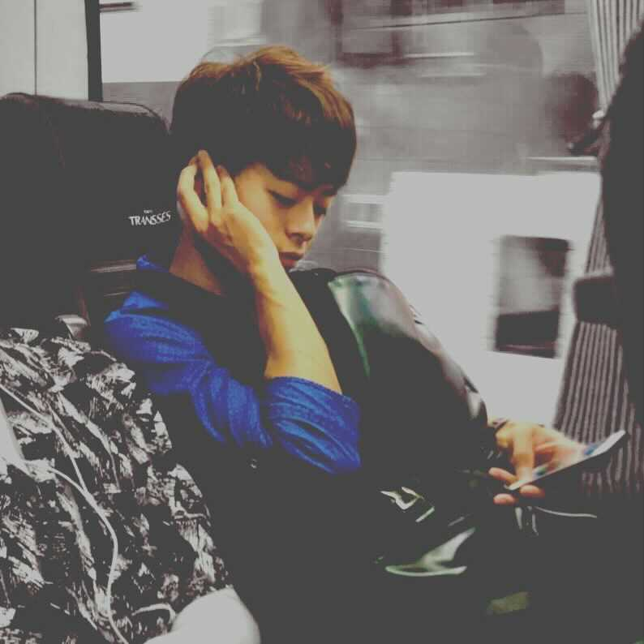
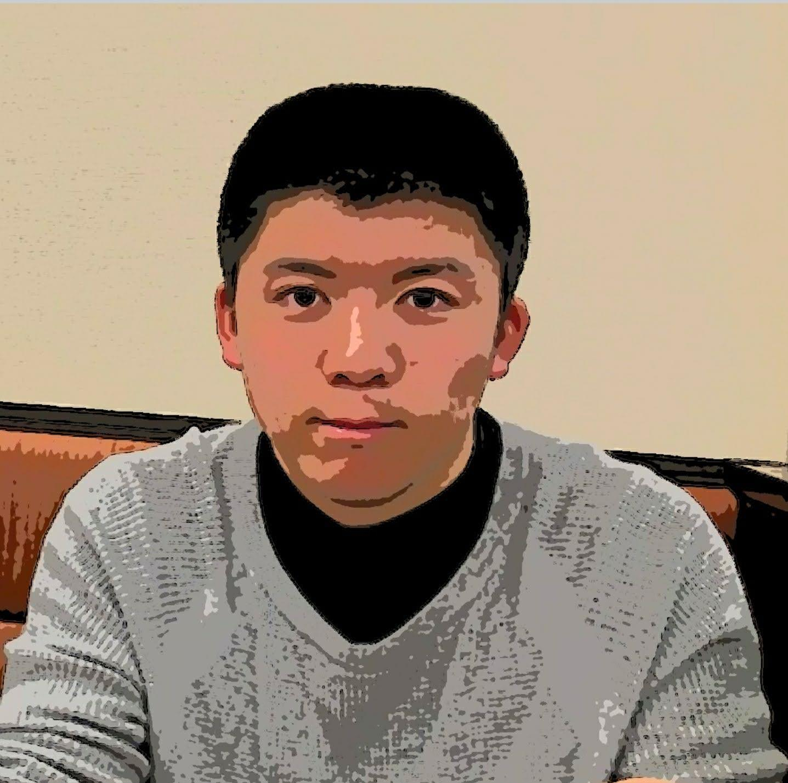
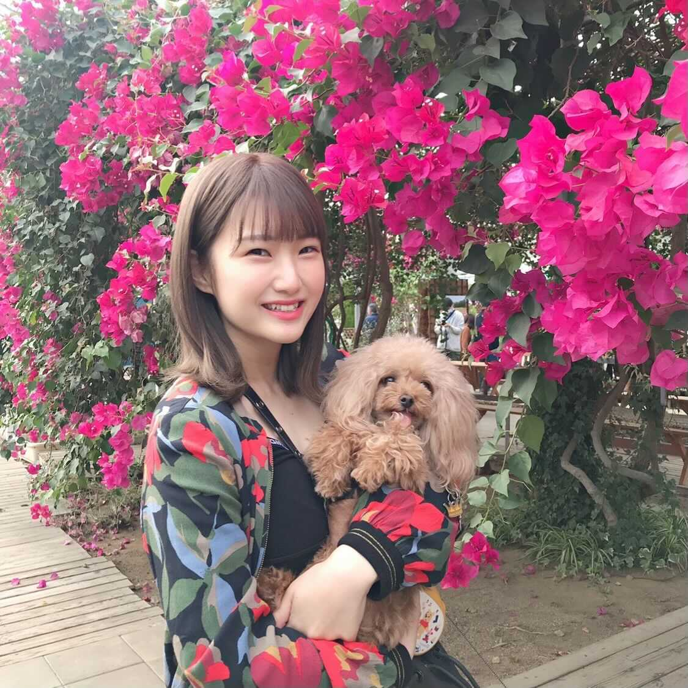
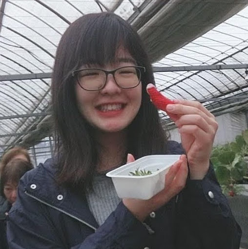

中西 崇文
Nakanishi Takafumi
専門分野 : データマイニング、感性情報処理、メディアコンテンツ分析
著書：
スマートデータ・イノベーション（翔泳社）
シンギュラリティは怖くない:ちょっと落ちついて人工知能について考えよう(草思社)
趣味：ピアノ演奏、DTM
portfolio

稲荷 太良
Inari Tyler
木村 侑斗
Kimura Yuto

仲程 凜太朗
Nakahodo Rintaro

新田 拓真
Nitta Takuma
好きなこと : 旅行, 飲食, モノづくり
研究内容 : 手話の1種である指文字の翻訳システムの構築 (2021年4月 現在)
研究領域 : 画像処理, 自然言語処理, 時系列分析, 異常検知, データベース, マーケティング
portfolio
野地 雄人
Noji Yuto
好きなこと : 音楽, ゲーム, 食べる飲む, 写真
研究内容 : 楽曲の周波数特徴に基づく配色提案 (2021年4月 現在)
興味分野 : テキスト, 音楽, 機械学習, UI/UX
portfolio

萩本 新平
Hagimoto Shinpei

本田 くれあ
Honda Kurea

柳瀬 愛里
Yanase Ari